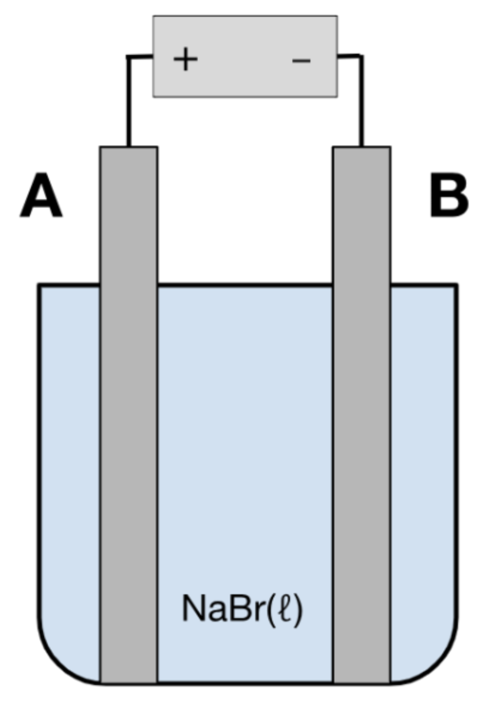
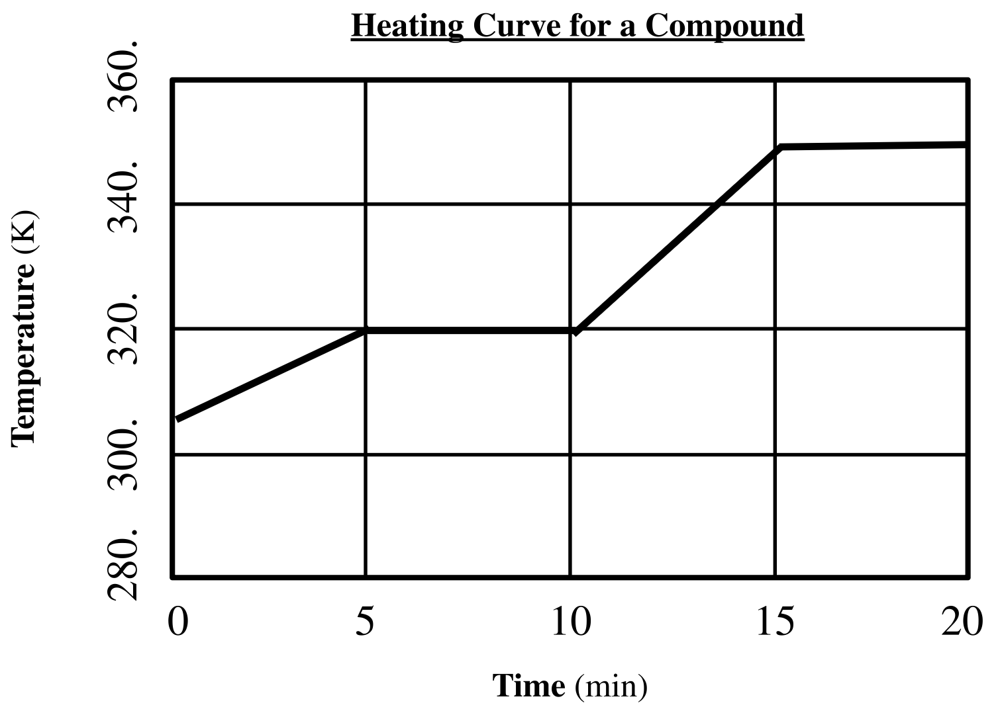
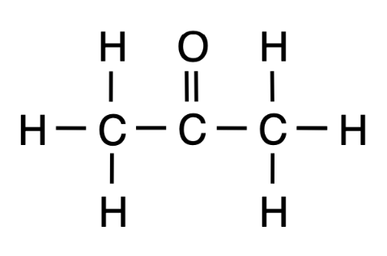
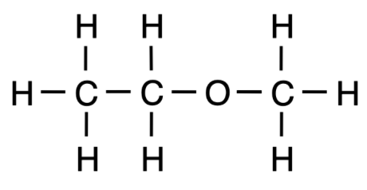
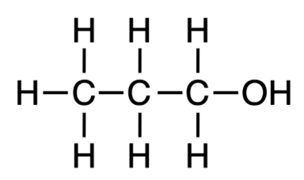
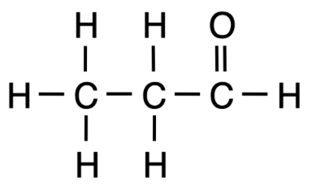
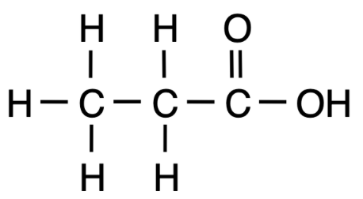
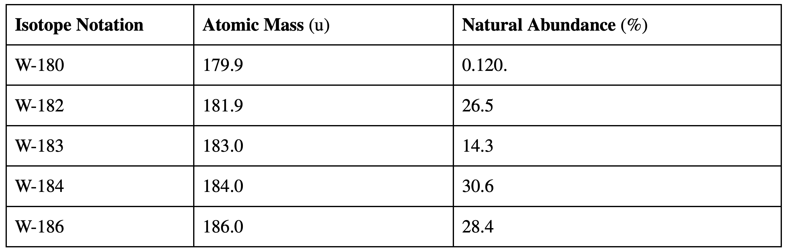
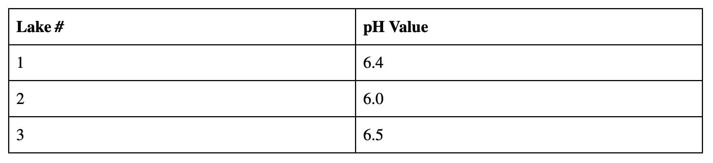

Breakthrough Education Academy NYS Chemistry Mock Regents Examination, 2024 ed.
Examination created by Derek Guo.
Please note that as this mock examination and its answer key are created by a student and not professionally checked for accuracy, there may be mistakes or inaccuracies. Please email be.admy@gmail.com if you believe you have encountered such an error. This mock examination is not affiliated with nor endorsed by the New York State Board of Regents.
INSTRUCTIONS
1. Allow yourself at least 2 hours, but at most 3 hours, undisturbed to complete this mock examination.
2. Record your answers to all problems on your own scrap paper. Note that the real examination does not allow you to use scrap paper for any purpose.
3. Significant figures are not required, but recommended, unless otherwise noted.
4. You are allowed a calculator and your NYS Chemistry reference table.
This mock examination is intended to assess your strong and weak points in your knowledge of chemistry. As such, all problems are "fair game" for the Regents examination, but they may lean more difficult than
the typical Regents exam. An answer key to all problems, including the free-response problems, is
provided on the Breakthrough Education Academy website.
THIS MOCK EXAMINATION BEGINS BELOW THE LINE.
--------------------
PART A (30 questions)
1. All of the following are part of Dalton's atomic theory except for which?
(1) Atoms are hard, indivisible spheres.
(2) All atoms of the same element are identical.
(3) All matter is composed of atoms.
(4) Atoms have a small, dense, and positively-charged nucleus.
2. Systems in nature tend to undergo changes toward
(1) lower energy and lower disorder.
(2) higher energy and lower disorder.
(3) lower energy and higher disorder.
(4) higher energy and higher disorder.
3. C2H5OH is an example of an
(1) alkane.
(2) alkene.
(3) alkyne.
(4) alcohol.
4. Which of the following can be separated into two substances by physical means?
(1) KI(aq)
(2) H2O(g)
(3) Ag(s)
(4) NaCl(l)
5. All of the following have the same approximate mass except for
(1) neutron
(2) proton
(3) atom of protium
(4) positron
6. Which of the following most accurately describes a noble gas?
(1) Noble gasses have eight valence electrons.
(2) Noble gasses usually exist in monatomic form.
(3) Noble gasses usually exist in diatomic form.
(4) Noble gasses are highly reactive.
7. An excited neon atom emits a specific amount of energy when one of its electrons moves from
(1) the second shell to the third shell.
(2) the first shell to the third shell.
(3) the second shell to the first shell.
(4) the first shell to the second shell.
8. In a voltaic cell, oxidation occurs at the
(1) cathode
(2) anode
(3) switch
(4) salt bridge
9. An alkyne has the molecular formula C2024Hn, where n is some positive integer. What is n?
(1) 4046
(2) 4048
(3) 4050
(4) 4052
10. Which of the following will not increase the pressure of a gas in a closed container?
(1) replacing the existing gas with a heavier gas
(2) reducing the volume of the container
(3) increasing the number of gas particles of the same identity as the existing gas
(4) increasing the temperature
11. According to the kinetic molecular theory, ideal gas particles
(1) collide to produce a net change in energy.
(2) are separated by small distances relative to their size.
(3) have small attractive forces between them.
(4) move in random, straight-line motion.
12. Which phrase best describes the molecular polarity and charge distribution of a CCl4 molecule?
(1) nonpolar with an asymmetrical distribution of charge
(2) nonpolar with a symmetrical distribution of charge
(3) polar with an asymmetrical distribution of charge
(4) polar with a symmetrical distribution of charge
13. A reaction is most likely to occur when the reacting particles collide with proper energy and proper
(1) oxidation values.
(2) mass.
(3) orientation.
(4) repulsive forces.
14. Ribose, C5H10O5, and formaldehyde, CH2O, have the same empirical formula. Compared to ribose, formaldehyde has
(1) the same physical properties and the same chemical properties
(2) different physical properties and different chemical properties
(3) the same physical properties but different chemical properties
(4) different physical properties and different chemical properties
15. Which term identifies the strong intermolecular forces found in liquid hydrogen fluoride?
(1) covalent bonding
(2) London dispersion forces
(3) hydrogen bonding
(4) ionic bonding
16. Which atom forms an ion with a radius smaller than the atomic radius?
(1) iodine
(2) zinc
(3) aluminum
(4) scandium
17. Atoms of what element bond to each other to form chains, rings, and networks?
(1) hydrogen
(2) nitrogen
(3) carbon
(4) chlorine
18. Systems in nature tend to undergo changes toward
(1) greater energy and greater entropy
(2) greater energy and less entropy
(3) less energy and greater entropy
(4) less energy and less entropy
19. As neon-19 decays, it emits which of the following?
(1)
(2)
(3)
(4) p+
20. Which negative ion must be present in an aqueous solution of an Arrhenius base?
(1) peroxide
(2) oxide
(3) cyanide
(4) hydroxide
21. Which of the following laboratory techniques can determine the unknown concentration of hydrochloric acid?
(1) chromatography
(2) titration
(3) distillation
(4) filtration
22. Based on Table G, which compound is the most soluble in 2000. g of water at 30.°C?
(1) NH4Cl
(2) SO2
(3) NaCl
(4) HCl
23. What is the representative unit of potassium bromide?
(1) formula unit
(2) atom
(3) molecule
(4) ion
24. Which process results in an increase in entropy?
(1) evaporation
(2) deposition
(3) solidification
(4) condensation
25. Given the equation representing a reaction:
2H2 + O2 → 2H2O
What occurs during this reaction?
(1) Energy is released and a bonds are formed.
(2) Energy is absorbed and bonds are formed.
(3) Energy is released and bonds are broken.
(4) Energy is absorbed and bonds are broken.
26. How many electrons are present in the bond between the fluorine atoms in F2?
(1) 1
(2) 2
(3) 4
(4) 6
27. Which of the following has the greatest boiling point?
(1) CH4
(2) C2H6
(3) C3H8
(4) C4H10
28. Which of the following indicators, when added to a sample of coffee with a pH 5.5, would appear yellow?
(1) phenolphthalein
(2) litmus
(3) methyl orange
(4) bromocresol green
29. Saponification, a type of organic reaction, produces soap and
(1) carbon dioxide
(2) glycerol
(3) water
(4) ethanol
30. Which statement best describes a benefit of fission?
(1) Fission produces wastes that must be appropriately taken care of.
(2) Fission produces nuclear power.
(3) Fission can cause nuclear accidents.
(4) Fission can cause biological exposure.
PART B-1 (20 questions)
31. All of the following are part of Dalton's atomic theory except for which?

As this electrochemical cell functions, which of the following processes occurs?
(1) Br− ions are oxidized at electrode A to form bromine molecules.
(2) Br− ions are reduced at electrode B to form bromine molecules.
(3) Br− ions are reduced at electrode A to form bromine molecules.
(4) Br− ions are oxidized at electrode B to form bromine molecules.
32. An aluminum atom has a mass number of 27. What is the number of neutrons in this atom?
(1) 13
(2) 14
(3) 27
(4) 40
33. Based on Table F, which of the following compounds is the least soluble in water?
(1) NH4Cl
(2) K2CO3
(3) Ba(OH)2
(4) PbSO4
34. Which statement best describes the average kinetic energy and the potential energy between minute 10 and minute 15?

(1) Average kinetic energy and potential energy both remain constant.
(2) Average kinetic energy increases and potential energy remains constant.
(3) Average kinetic energy remains constant and potential energy increases.
(4) Average kinetic energy and potential energy both increase.
35. 120. grams of a substance absorbs 0.8878 kJ of heat when heated from 322.0 K to 341.0 K. The specific heat capacity, C, of this substance, is N J/g⋅K. What is N?
(1) 0.389
(2) 3.89 × 10−4
(3) 202 × 104
(4) 2020
36. Which of the following is the best conductor of electricity?
(1) mixture of AgCl(s) and H2O(l)
(2) NaCl(s)
(3) AgCl(l)
(4) C(s)
37. Which of the following metals oxidizes the most readily?
(1) copper
(2) cobalt
(3) lead
(4) titanium
38. A Bunsen burner is used to heat a test tube and its contents. Proper safety procedures are followed. Later, a student holds the test tube and feels that it is still warm. Which phrase describes a heat transfer that occurred in this scenario?
(1) from the flame to the hand
(2) from the hand to the test tube
(3) from the test tube to the flame
(4) from the test tube to the hand
39. A ionic formula always
(1) is written with the anion preceding the cation
(2) is the same as its empirical formula
(3) is written with charges on each ion included
(4) is written with Lewis electron-dot diagrams for each ion included
40. Given the following balanced equation representing a reaction:
CH4(g) + 2O2(g) → CO2(g) + 2H2O(g)
Which mass of CH4(g) reacts completely with 12.4 g of O2(g) to produce 8.53 g of CO2(g) and 6.98 g of H2O(g)?
(1) 3.11 g
(2) 6.22 g
(3) 12.8 g
(4) 25.6 g
41. In which of the following compounds does the cation have an oxidation value of +3?
(1) CrO3
(2) CaCl2
(3) FeCl3
(4) Mg3P2
42. Assuming constant pressure, N2(g) at 373 K is
(1) soluble in water, but less soluble in water than N2(g) at 273 K.
(2) soluble in water and has the same solubility in water than N2(g) at 273 K.
(3) soluble in water and more soluble in water than N2(g) at 273 K.
(4) not soluble in water at all.
43. Which electron configuration represents an atom of phosphorus in an excited state?
(1) 3-7-5
(2) 2-7-7
(3) 2-8-5
(4) 2-7-6
44. What is the percent composition by mass of hydrogen in chloromethane?
(1) 2.00%
(2) 6.00%
(3) 16.0%
(4) 70.2%
45. Given the incomplete equation representing a reaction:
2C6H14 + 19O2 → ___CO2 + 14H2O
What is the coefficient of CO2 when the equation is completely balanced using the smallest whole-number coefficients?
(1) 10
(2) 11
(3) 12
(4) 13
46. Decreasing the volume of the container of a gas by 10.0% at a fixed temperature will cause the gas pressure to increase to what percent of the original gas pressure?
(1) 111%
(2) 126%
(3) 11%
(4) 26%
47. Which type of reaction is represented by the balanced equation below?
+ → + + 2
(1) esterification
(2) combination
(3) fission
(4) fusion
48. A sulfide ion, S2-, has the same electron configuration as which noble gas?
(1) neon
(2) argon
(3) krypton
(4) xenon
49. Which of the following is an isomer of the compound whose structural formula is shown below?

(1) 
(2) 
(3) 
(4) 
50. What is the nuclear charge of a Mg2+ ion?
(1) 0
(2) +2
(3) +10
(4) +12
PART B-2 (15 questions)
Base your answers to questions 51 through 56 on the information below and on your knowledge of chemistry.
Tungsten is a transition metal located in the sixth period of the periodic table that is often used in alloys due to its high density, hardness, and strength and also appears in heat-resistant compounds such as tungsten carbide, in which tungsten is combined with carbon. Tungsten has five naturally occurring isotopes, of which only one is radioactive. Their atomic masses and natural abundances are shown in the table below.

51. State the number of significant figures used to express the percent natural abundance of W-180.
52. Show a numerical setup for calculating the atomic mass of the element silicon.
53. State one desirable physical property of tungsten that makes it favored for use in alloys.
54. Draw a Lewis electron-dot diagram for an atom of carbon in the ground state.
55. State the trend in electronegativity values of the elements hafnium, tantalum, tungsten, and rhenium are considered in order of increasing atomic number.
56. Identify one transition metal other than tungsten.
--------------------
Base your answers to questions 57 through 61 on the information below and on your knowledge of chemistry.
3-ethyl-2-heptene is an example of a hydrocarbon.
57. State the two elements that must be present in a hydrocarbon.
58. Draw a structural formula for 3-ethyl-2-heptene.
59. State the empirical formula of 3-ethyl-2-heptene.
60. State the molar mass of 3-ethyl-2-heptene.
61. Identify the name of one isomer of 3-ethyl-2-heptene.
--------------------
Base your answers to questions 62 through 65 on the information below and on your knowledge of chemistry.
The Haber process is the main procedure used for the industrial production of ammonia, NH3. It occurs in a closed system and is represented by the following balanced equation:
N2 + 3H2 ⇌ 2NH3 + 91.8 kJ
62. When the system is at equilibrium, compare the rate of the forward reaction to the rate of the reverse reaction.
63. Explain, using Le Chatelier's principle, why the Haber process is typically carried out at extremely high pressures of up to 400. atm.
64. State the effect of increasing the temperature of the system on the concentration of ammonia in the system.
65. In order to shift the equilibrium to favor the forward reaction, state one reactant or product whose concentration could be increased.
--------------------
PART C (20 questions)
Base your answers to questions 66 and 67 on the information below and on your knowledge of chemistry.
Some people have suggested that life-forms on extraterrestrial planets, if they exist, could be silicon-based. Life on Earth is carbon-based.
66. Explain, in terms of electron configuration, why carbon and silicon have similar chemical properties.
67. Compare the mass of 1.0 mol of SiO2 to the mass of 1.0 mol of CO2.
--------------------
Base your answers to questions 68 through 71 on the information below and on your knowledge of chemistry.
Four metals are available to a student: aluminum, magnesium, tin, and chromium. The student would like to create a functioning galvanic cell with one of these four metals for the cathode and iron for the anode.
68. From the given list of metals, identify the one that should be used for the cathode in the student's cell.
69. Write a balanced half-reaction equation for the oxidation of the zinc when this galvanic cell functions.
70. State the purpose of the salt bridge in a galvanic cell.
71. State the type of energy converted from chemical potential energy when the cell functions.
--------------------
Base your answers to questions 72 through 74 on the information below and on your knowledge of chemistry.
A student dissolves 20. grams of potassium chloride in 0.050 g of water at 25°C. During this process, the temperature of the water decreases.
72. Classify, in terms of saturation, the type of solution produced.
73. State, in terms of temperature, why the dissolving of the solid potassium chloride is classified as an endothermic process.
74. Determine the number of moles of potassium chloride dissolved.
--------------------
Base your answers to questions 75 through 77 on the information below and on your knowledge of chemistry.
During an experiment, aqueous sodium chloride reacts with aqueous lead(IV) nitrate. During this laboratory activity, appropriate safety equipment was used and safety procedures were followed.
75. Write a balanced equation, using the smallest whole number coefficients, for this reaction. Include states of matter for all reactants and products.
76. State a chemical name of the precipitate formed.
77. State whether a physical or chemical change occurred during this reaction.
--------------------
Base your answers to questions 78 through 80 on the information below and on your knowledge of chemistry.
A student collects samples of water from three lakes in different regions in order to test and record the lakes' pH levels. The student's results are shown in the table below.

78. State the number of the lake that is the most basic, according to the samples.
79. State the hydroxide ion concentration, in M, of the sample from lake #2.
80. Identify the ion released by the compound dissolved in all of the samples that allows them to be classified as Arrhenius acids.
--------------------
Base your answers to questions 81 and 82 on the information below and on your knowledge of chemistry.
Two rigid containers, one containing fluorine gas and the other containing nitrogen gas, with volume 1500. mL are placed in the same room at STP.
81. Explain, in terms of intermolecular forces, why nitrogen has a higher melting point than fluorine.
82. Show a numerical setup for determining the number of moles of nitrogen molecules present in its container.
--------------------
Base your answers to questions 83 through 85 on the information below and on your knowledge of chemistry.
The 108th element on the periodic table is hassium. It was first synthesized in 1984 by bombarding a lead-208 atom with an iron-56 nucleus. One of its isotopes, Hs-270, has a half-life of 7.60 seconds and decays by alpha decay.
83. Explain why the first synthesis of hassium was a transmutation reaction.
84. Write the notation for the missing particle in the following equation representing the decay of Hs-270.
→ α + ____
85. State the fraction of an original sample of Hs-270 that remains unchanged after 30.4 seconds.
--------------------
END OF EXAMINATION.
© 2024 Derek Guo. All rights reserved.
No part of this website may be reproduced in any means without written permission from the creator of this document.